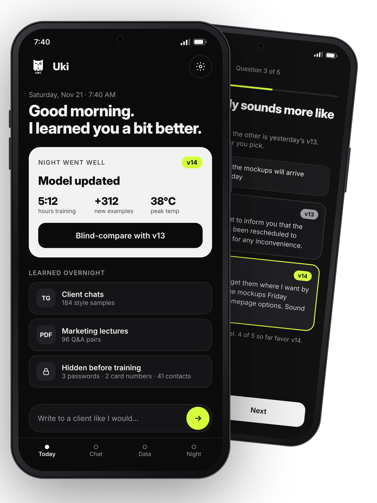
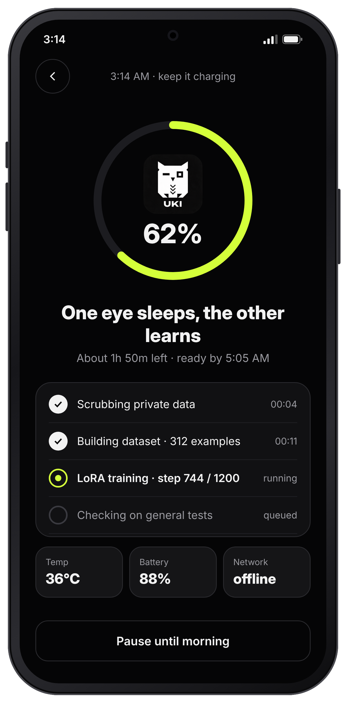
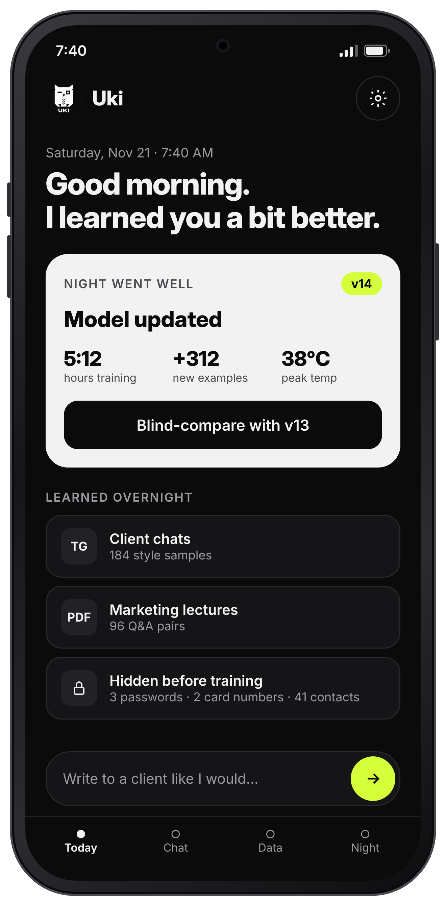
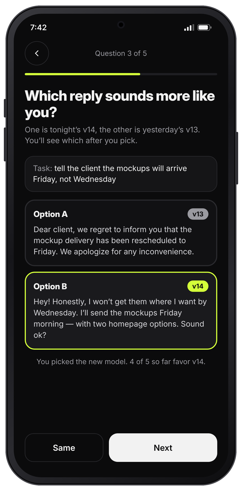
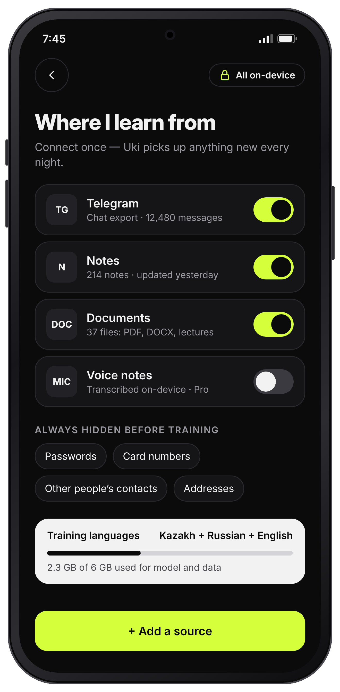

Uki lives on your phone. While it charges, the app turns your notes, chats and documents into training examples and fine-tunes a small open model on them. By morning it knows your work better and writes the way you do — and your data never leaves the device.

One model shared by everyone. Your personal data goes to someone else’s servers, and personalisation stops at “memory” and instructions.
Even the best open tools need a graphics card, a command line and a ready-made dataset.
Nobody knows how to turn their chats and notes into training examples — or how to check that the model actually got better.
Most people don’t own a computer with a graphics card. Their phone has a powerful GPU — and it sits idle every night.
Every night your phone turns your data into your own AI. The cycle repeats on new data.
* Times are illustrative. Our target: a night of training fits within 6 hours on charge, without overheating.

The same request, before and after one night of training on your own messages.
Dear Client, I am writing to inform you that the mockups will be delivered on Friday. Thank you for your understanding. Best regards.
Hi Aigerim! You’ll have the mockups on Friday before lunch — I’ll send a Figma link, same as last time.


We measure, not promise. Every model goes through a blind before / after comparison. Our goal: people pick the trained model in at least 70% of cases.
And from day one search across your own data (RAG) already works — before the first night of training.
Training and inference run on the phone. Your data is not sent anywhere.
Anyone can check what happens to the data.
The model works and learns even without internet.

Training your own AI should be as easy as making your own website. Own your model — don’t rent someone else’s.
Writes client emails and posts the way you write them. You can see the difference with your own eyes.
Knows your notes, lectures and course materials.
An AI of your own that sends nothing to the cloud.
Training and inference run on your phone, so our server costs are close to zero — and the basic version is free. Prices are hypotheses we’ll confirm in the beta.
One model, search across your data, training once a week.
Nightly training every day, all data sources, several “personas” — for work and for study.
A shared team model, trained together on employees’ devices; data never leaves the company. Planned for year two.
Later: a catalogue of ready-made adapters — trained models that people share or sell.
Four stages in the first year. Each next stage starts only once the previous one passes its threshold.
Auto-dataset, blind test, 10 interviews, background-training prototype.
threshold → ≥70% pick the new model in a blind test
Training on iPhone and Android, measurements, hiring ML and mobile engineers.
threshold → a night ≤6 h without overheating
The app, data import, the before / after screen, 100 beta testers.
threshold → 40% come back after a week
App Store and Google Play, Pro subscription.
iPhone and Android, from the first version. Flagships train the model right on the phone; other phones get search across your data plus training on your laptop over Wi-Fi, or a smaller model.
Training only runs while the phone is charging and you are asleep. Our threshold: a night of training within 6 hours, no overheating. Heat and battery are the first things we measure.
After every night the model takes a set of general tests. If something drops, the training is rolled back.
Telegram exports, notes, documents and voice messages. Passwords, card numbers and other people’s contacts are removed before training.
No. There is an offline mode, and your data never leaves the phone either way.
Join the beta: we’re picking the first 100 beta testers and will ask what your AI should be like. Starting in Kazakhstan and the CIS, on iPhone and Android.